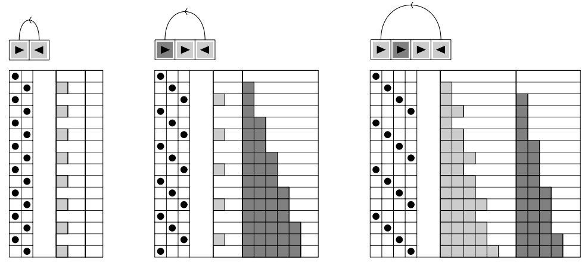
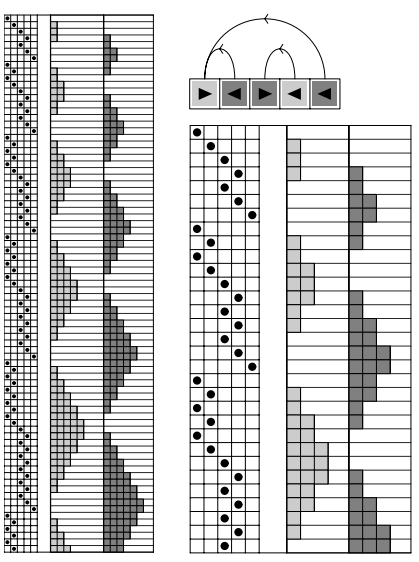
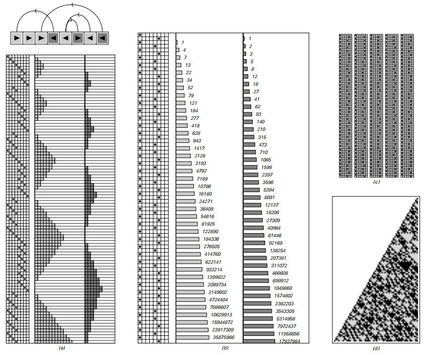

3.9 寄存器机
到目前为止我们讨论的系统都可以在实际的计算机上实现。但实际上它们在潜层的工作都不像典型的计算机。寄存器机就是一类很像今天计算机的简单理想化模型。
在今天大多数的环境中，计算机的硬件构造已经用很多软件层隐藏了起来。但在一些底层，所有标准计算机的CPU都将数字存储到寄存器，我们写的程序最终都会被转换成一系列简单的对寄存器操作的指令。
大多数实际的计算机有一些寄存器，支持十余种不同类型的指令。但是作为一个简单理想化的模型，我们只考虑有两个寄存器——每个寄存器存储一个任意大小的数字——有两种指令操作：“increments”（自增）和“decrement-jumps”（自减-跳转）。这种寄存器机的规则是实际程序的理想化，获取一系列指令的固定序列，然后执行。
自增指令是用来对特定寄存器的内容增加一个数的指令。自减-跳转做了两件事。首先将特定寄存器的数减一，然后不是继续执行下一条指令，而是跳到特定的另一个程序的位置，然后从新的位置开始执行。
因为我们假定我们寄存器中的数不能是负数起，寄存器到0就不能再减少了。自减指令被设定为如果寄存器中数字为0，它们什么都不做：它们让寄存器不变，然后执行下一条指令，不跳去任何其他地方。
自减指令的特性像是一个细节，但实际上是很关键的——它使得我们的寄存器机能够根据寄存器的值选择程序不同的路径。
（p97）
 寄存器机的一些例子，模仿实际计算机的底层操作。这个机器演示了两个寄存器，它们的值在连续步骤中连续给出。每一个寄存器机遵从其顶部的固定程序。程序由一系列自增和自减-跳转指令组成。亮色格子代表第一个寄存器，黑灰色格子代表第二个。每一行依次往下，左侧黑色的圆点开始指示程序应该执行的指令。这里所演示的特定程序，每一个机器循环执行，当它到程序末尾就回到开始。
在这种设定下，上面的图片演示了三个非常简单寄存器机的例子。每个机器用→代表自增，←代表自减-跳转。连续的步骤演示了每个机器一行行的进化。每一步所执行的指令由左侧的黑色圆点指示，每一步的数字由右侧的灰色格子数目代表。
所有的寄存器机均从执行程序第一条指令开始，根据特定使用的程序，每一步在程序中执行，如果达到程序末端则回到开始。
（p98）
在这三个例子中，整个行为都是重复的。事实上，最终有10552种有四条以及更少指令数的可能的寄存器机，没有一个表现出复杂行为。
然而，在五条指令下，一些更复杂的行为就变得可能了，就像下面的图片演示的。但是在这些例子中，依然有相当高程度的规律和嵌套结构。
 一个演示着重复行为的寄存器机。这个寄存器机的程序有五个指令，这个程序是248832种可能情况中的仅有的两种（通过交换第一个和第二个寄存器）产生不止严格的重复行为。
事实证明，即使提升到七种指令，276224376种程序中无一使得程序行为更复杂。但在八种指令时，11,019,960,576 种可能的126种最终产生了复杂行为。下一页给出了一个例子。
（p99）

一个行为近似随机的寄存器机。这个寄存器机有八个指令。共有11019960576中可能的程序，而其中只有125个相似案例有复杂行为。b）演示了演化的压缩形式，记录了当数值减少到0时的寄存器。非零数值使用对数尺度显示。c）演示了最初400次寄存器减到0的情况。最后d）给出了在第一个寄存器减到0时第二个寄存器连续的值。这些值都用二进制序列表示。在122页讨论的，值实际上能够用一个简单的算术规则获取，不需要明确对寄存器机的每一步演化进行观察。如果一个值是n，如果n是偶数，下一个值是3n/2，如果是奇数，下一个是（3n+1）/2。初始条件为n=1。
看a）的原始演化，系统表现出相当简单规律的行为。但是仔细检查发现了不规则的行为。图片的b）部分演示了一个压缩的版本。在这幅图中，你会看到执行的指令中有一些明显随机的变化。
（p100）
图片的c）部分演示了指令执行的前四百次寄存器减到0的情况。d）部分最终演示了当第一个寄存器减少到零时第二个寄存器的数值的连续二进制形式。其表现出的结果可以认为是随机的。
所以即使并不是像我们研究的其他系统那样很明显，前页的寄存器机依然表现出近似随机的复杂行为。
如果是更为复杂的寄存器机呢？
一个明显的可能性就是允许不止两个寄存器。但事实证明这样得到的是很少的。比如三个寄存器，能得到近似随机行为的程序需要七八条指令。但这实际上和两个寄存器没什么区别。
另一种设置更加复杂行为的方法是扩展指令种数。其中一个例子就是引入对两个寄存器相加、相减、比较的指令。但事实证明这些指令的出现对复杂性行为的发生几乎没有多少影响。
当扩展指令使用和设置时，寄存器机能够提供对计算机底层操作相当精确的理想模型。结果是，寄存器机的程序通常就像一些底层计算机语言比如C、BASIC、Java或是汇编。
在一个典型的例子中，这种程序的每一个变量都符合寄存器机中的一个寄存器，没有数组或者指针。在这种相似下，我们的寄存器机的一般结论也能够应用在实际计算机底层语言书写的简单程序中。
（p101）
实际中的细节使得对程序进行这样的系统实验是很困难的。但是我所提出的这些实验，比如简单的寄存器机，在几百万个简单的程序中寻找产生展示出复杂性和随机行为的程序。